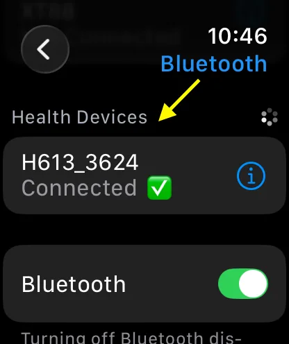
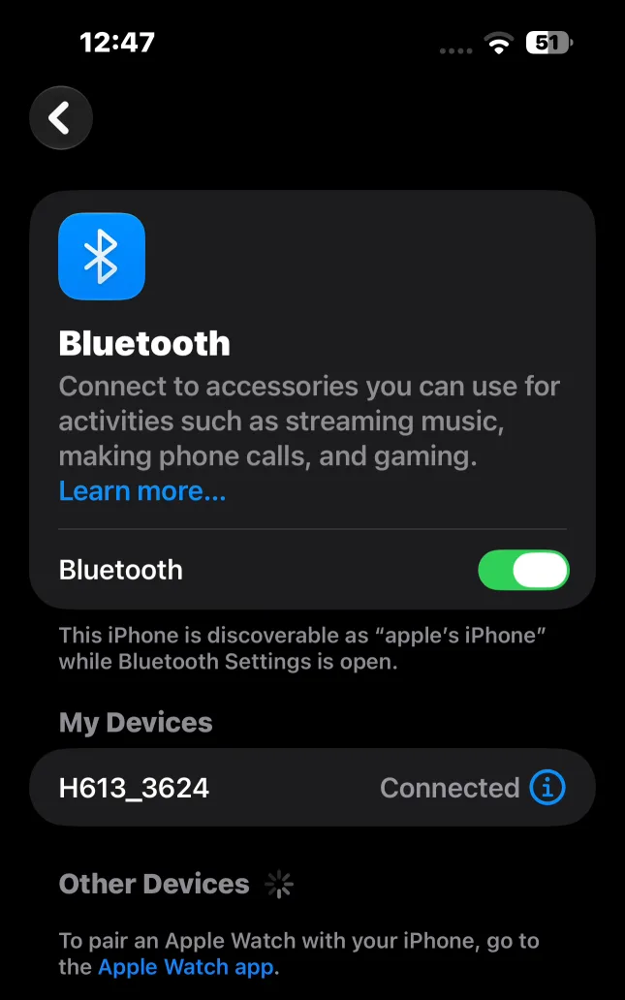

Guide
Heart-rate sensors
PaceIQ works with the heart-rate sources that Apple devices support on their own. You pair the sensor with your Apple Watch or iPhone once; there is nothing to install and nothing to set up in PaceIQ.
With an Apple Watch
The Watch measures your heart rate with its own sensor. If it cannot get a consistent reading, Apple suggests an external Bluetooth chest strap.
- Put the strap on so its sensor touches your skin.
- On the Watch, open Settings, then Bluetooth.
- Choose the strap under Health Devices. It shows Connected when it is ready.


With the iPhone alone
The iPhone has no heart-rate sensor of its own. Any sensor that supports the standard Bluetooth heart-rate profile works: a chest strap, an arm band, or a sports watch that broadcasts its heart rate. A sports watch usually has to be switched to its heart-rate broadcast mode first; its own instructions explain how.
- Put the sensor on, or switch on the broadcast on your sports watch.
- On the iPhone, open Settings, then Bluetooth, and choose the sensor.
- It shows Connected under My Devices. PaceIQ picks it up automatically when your workout starts.



Supported devices
1. Heart Rate Monitors (ECG Chest Straps)
Polar
- Polar H10
- Polar H9
- Polar H7
- Polar H1
Garmin
- Garmin HRM-Pro Plus
- Garmin HRM-Pro
- Garmin HRM-Dual
- Garmin HRM-Swim
- Garmin HRM-Tri
Wahoo Fitness
- Wahoo TICKR (Gen 1 & Gen 2)
- Wahoo TICKR X
Suunto
- Suunto Smart Heart Rate Belt / Smart Sensor
Bryton
- Bryton Smart Heart Rate Monitor
Sigma Sports
- Sigma R1 DUO
Myzone
- Myzone MZ-3
- Myzone MZ-Switch (Chest mode)
Budget & Third-Party Brands
- Magene H603 / H303 / H003
- COOSPO H808S / H6 / H9Z
- XOSS X1 / X2
- Cycplus H1
- ThinkRider Heart Rate Monitor
- Igpsport HR40 / HR60 / HR70
- Decathlon Kalenji Dual HR / Geonaute
- Moofit HR6
2. Heart Rate Monitors (Optical Armbands)
- Polar Verity Sense
- Polar OH1 / OH1+
- Wahoo TICKR FIT
- COOSPO HW807 / HW9
- Magene H803
- Scosche Rhythm+ 2.0
- Scosche Rhythm24
- Myzone MZ-Switch (Arm mode)
- COROS Heart Rate Monitor
- Orange Theory OTbeat Burn
3. Running Pods & Cadence Sensors
- Stryd / Stryd Next Gen
- COROS POD 2
- Polar Stride Sensor Bluetooth Smart
- Zwift RunPod
- Wahoo Stride Sensor
4. Cycling Speed & Cadence Sensors
- Garmin Speed Sensor 2 / Cadence Sensor 2
- Wahoo RPM Speed / RPM Cadence
- Wahoo Blue SC
- Magene S3+ / S314
- COOSPO BK805 / BK9
- Cycplus C3
- XOSS Vortex / X1
- Igpsport CAD70 / SPD70
- Moofit Speed & Cadence Sensor
- Bryton Smart Speed / Cadence Sensor
5. Cycling Power Meters
Pedals
- Favero Assioma UNO / DUO / DUO-Shi
- Favero Assioma PRO MX-1 / MX-2
- Garmin Rally RS100 / RS200
- Garmin Rally RK100 / RK200
- Garmin Rally XC100 / XC200
- Garmin Vector 3 / 3S
- Wahoo POWRLINK ZERO
Crank & Spider
- 4iii Precision 3 / 3+ / Precision PRO
- Stages Cycling Power Meters (Gen 3 Single/Dual)
- SRAM AXS Power Meters (Quarq)
- Shimano Dura-Ace / Ultegra Power Meters (FC-R9200-P / FC-R8100-P)
- Rotor INpower / 2INpower / INspider
- Power2Max NG / NGeco
6. Smart Bike Trainers & Indoor Bikes
Wahoo Fitness
- Wahoo KICKR V5 / V6 / KICKR MOVE
- Wahoo KICKR CORE / CORE Zwift One
- Wahoo KICKR BIKE / KICKR BIKE SHIFT
- Wahoo KICKR SNAP
Tacx (Garmin)
- Tacx NEO 2T / NEO 3M / NEO Bike Plus
- Tacx FLUX S / FLUX 2
- Tacx Flow Smart
Elite
- Elite Justo / Justo 2
- Elite Direto XR / XR-T
- Elite Suito / Suito-T
- Elite Avanti
- Elite Tuo
Zwift
- Zwift Hub / Hub One / Ride
Smart Indoor Bikes
- Stages SB20 Smart Bike
- Wattbike Atom / AtomX
- Schwinn IC4 / IC8 / 800IC
- Bowflex C6
7. Rowing & Gym Ergometers
- Concept2 Performance Monitor 5 (PM5)
- WaterRower ComModule
- Ergatta Rower Console
- Hydrow Rower
- Schwinn Airdyne AD8 (BLE versions)
8. Heart Rate Optical Earbuds
- Jabra Elite Sport
- Bose SoundSport Pulse
- Amazfit PowerBuds
What heart rate adds
With a heart-rate source, PaceIQ shows your heart rate during the workout, can warn you at the effort ceiling you set in IQ Plan, measures how quickly your heart rate recovers after the workout, and fills the heart-rate analysis on the Last Workout and History screens.
From Apple
Apple does not publish a list of brands or models. These pages describe what Apple devices support: